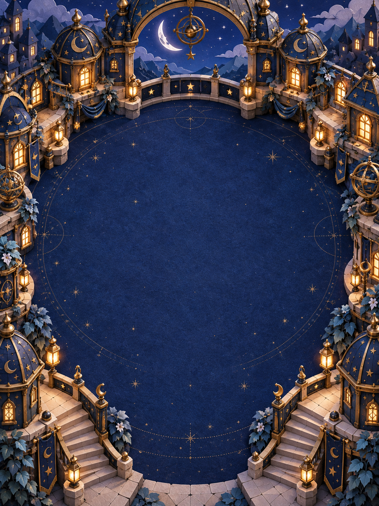

A little first light0 stars lit

A LITTLE REQUEST FROM CELESTE
The stars have
lost their way.
Turn the little brass glasses.
Guide my starlight home.
Tap to turn one notch, or drag a ring.
The light shows you what happens.
ONE MORE WONDER IN THE NIGHT
A constellation awakens.
The night can wait.
GLASS Itap a glass · turn its ring
A quiet corner of Celeste’s world.